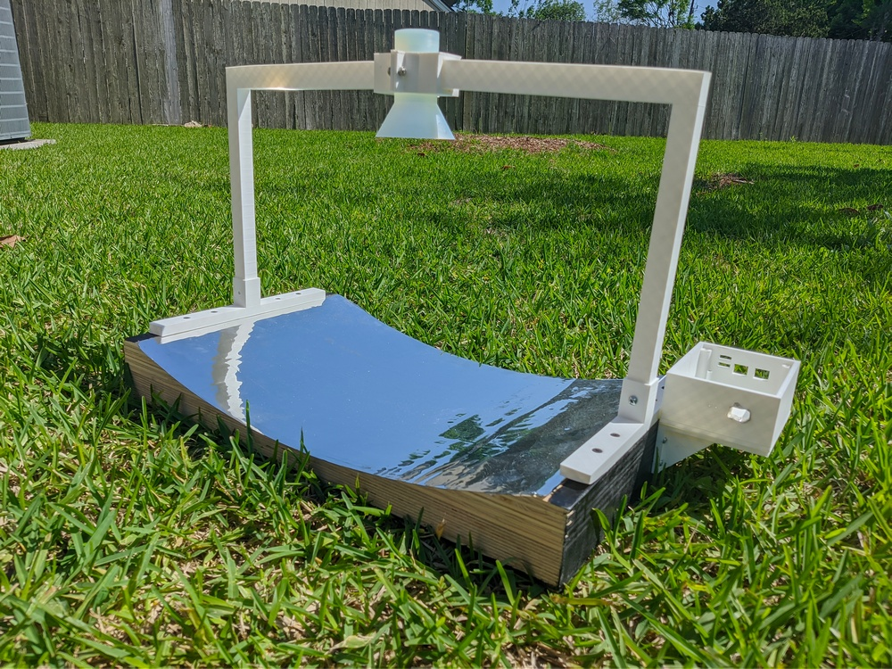
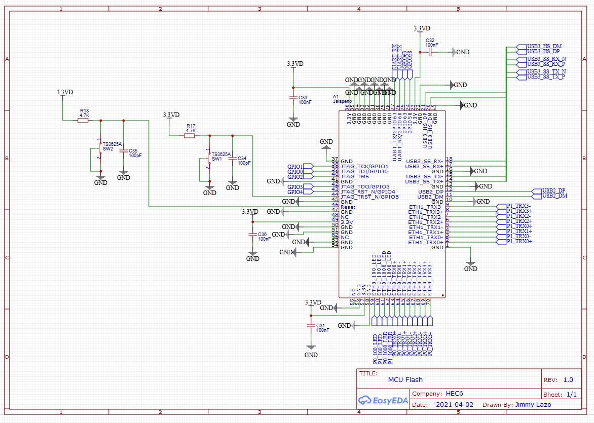

Senior Design Project - "Mesh Network Pilot" - 2021
5GHz conical horn antenna with built-in router.
My team built a 5GHz antenna with with a unidirectional conical horn and parabolic reflector that connects to a built-in router and can also connect to external routers.
The directly conical horn antenna allows the use of a higher gain that is the limiting factor of omnidirectional antennas. Ideally suited for preexisting networks, the Network Pilot can connect to any existing router through an Ethernet port. The high gain aspect of the antenna allows minimal height requirements and only requires line of sight to a larger node.

The internal router was designed off the open-source Jalapeno Wifi Router. I designed custom 4 layer PCB using the online EasyEDA editor which allowed use of components from the JLPCB fabrication service to facilite faster fabrication and assembly. The form factor was limited and the open source OpenWRT Project was flashed onto the internal router to handle the mesh networking protocol using the B.A.T.M.A.N. protocol.

Sponsors: West Houston Institute and Harris County Public Library.